Hello, we are
Content Context,
a design studio
that connects the
dots.
We create tools and
experiences that
amplify voices,
messages and ideas.
Get in touch.
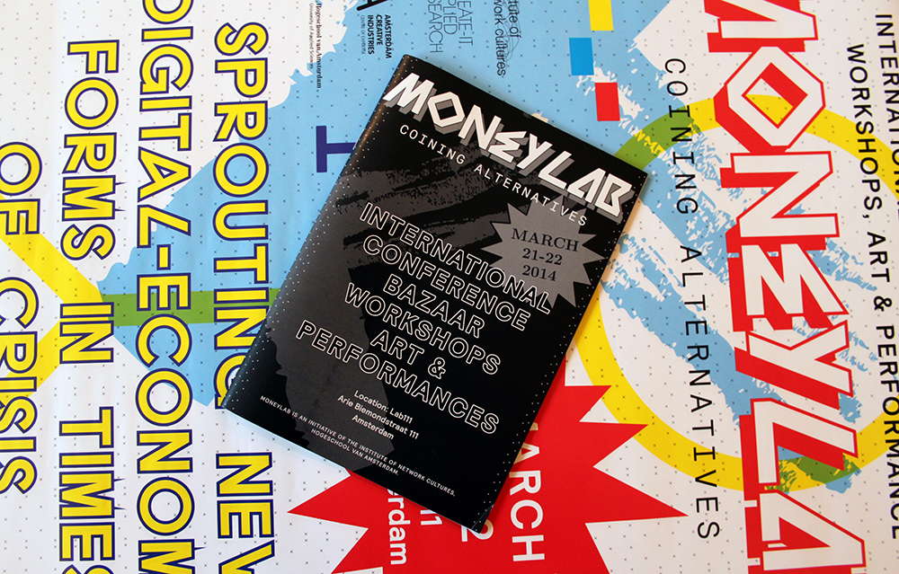
http://networkcultures.org/moneylab/about/
Editorial Team:
Geert Lovink (INC)
Nate Tkacz (Warwick University).
Patricia de Vries (INC coordinator)
Irina Enache (INC researcher)
Robert van Boeschoten (CMD researcher/crowdfunding)
MoneyLab: Coining Alternatives considers digital experiments with revenue models, payment systems and currencies against the backdrop of ongoing global economic decline. Sounds scary right?
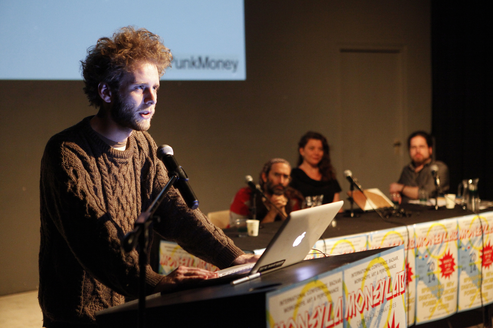

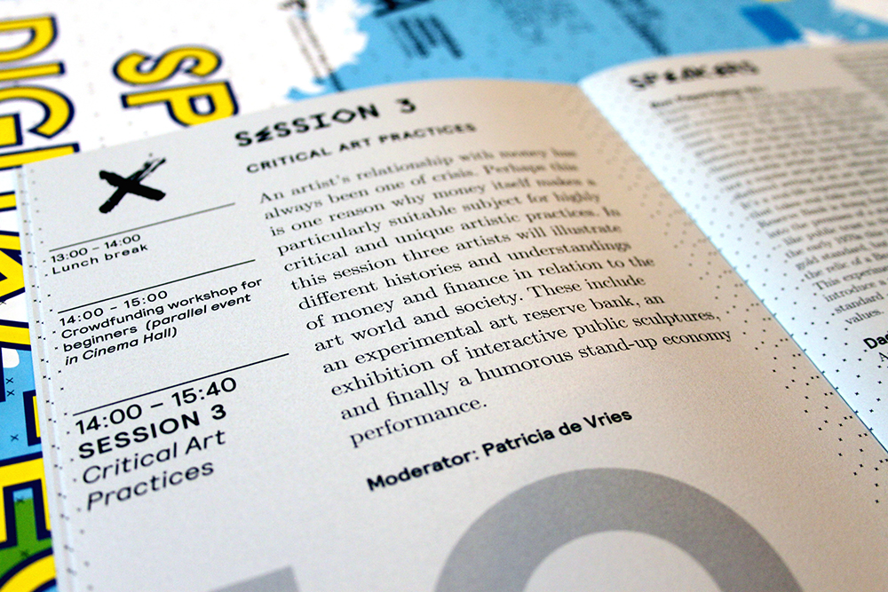
When we first started working on this project with Institute for Network Cultures (INC) to develop a visual language for MoneyLab they hated everything. But they did however, like how we were approaching the topic and our open process which allowed us to move in the right direction quickly.


As economics works with systems and networks it is reliant on many factors or variables to function. This design language also does the same, all elements are required all the time.
At the end of the day this design language we implemented and created is quite primitive and rough, most people thought it was ugly, we knew we were on to something.


Conference ID Badges
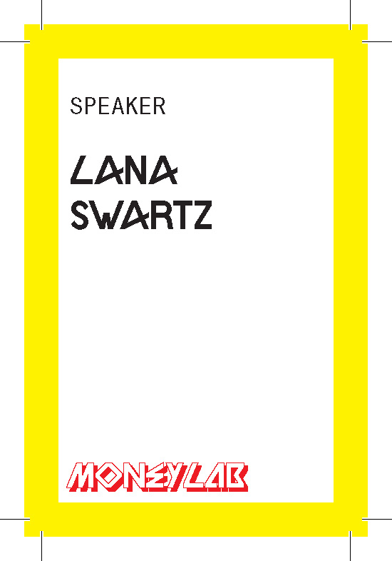

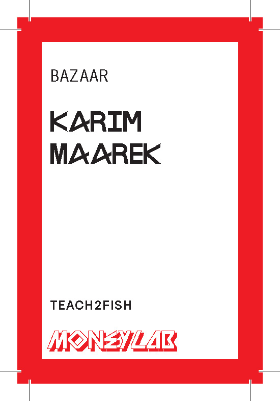
Press Release
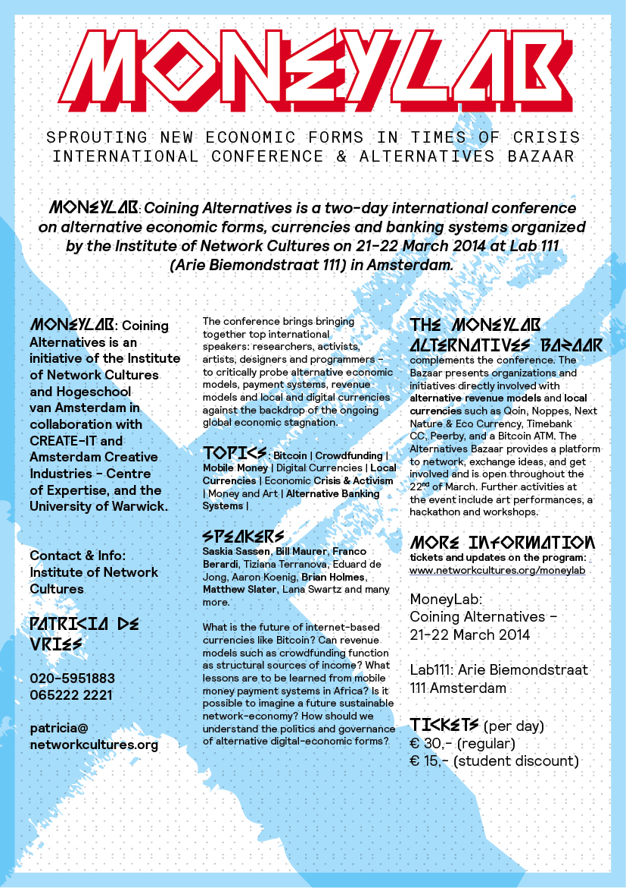
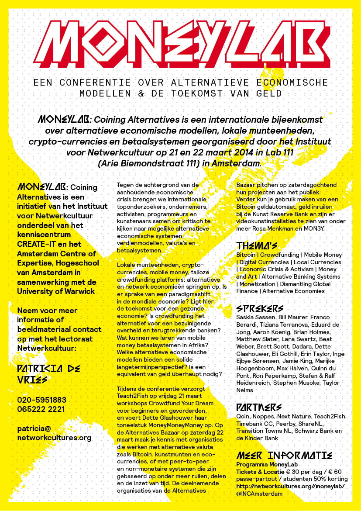
Alternate Poster

Blog


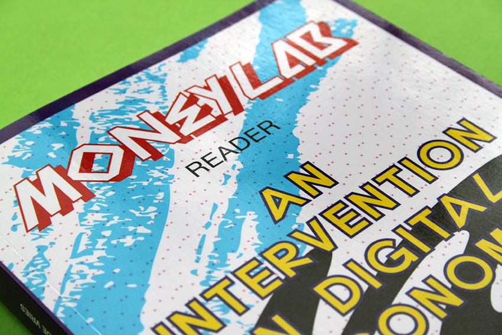
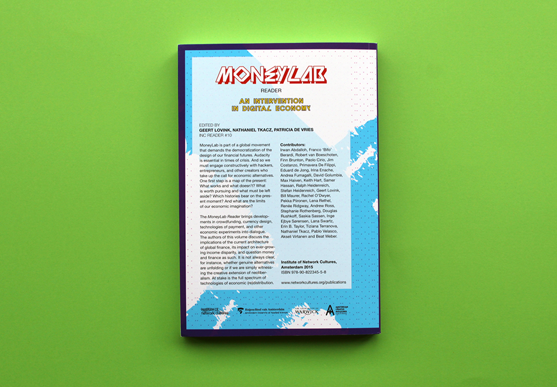
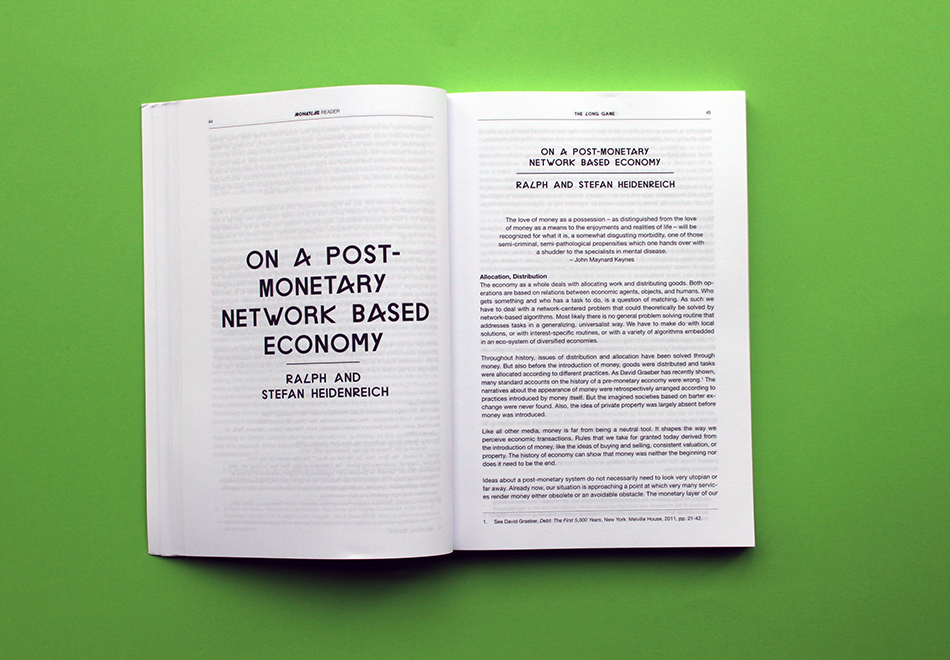
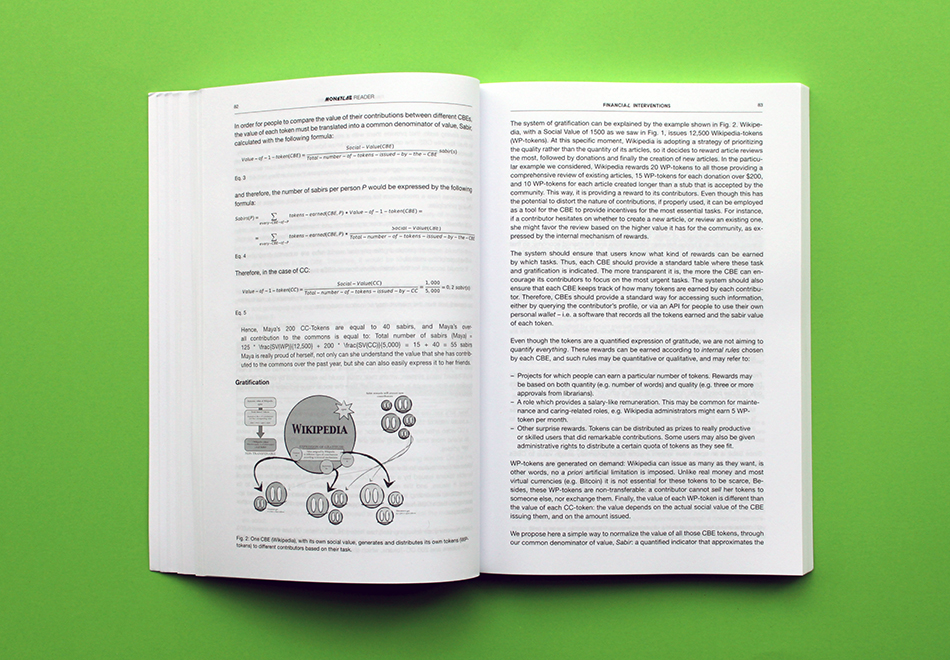